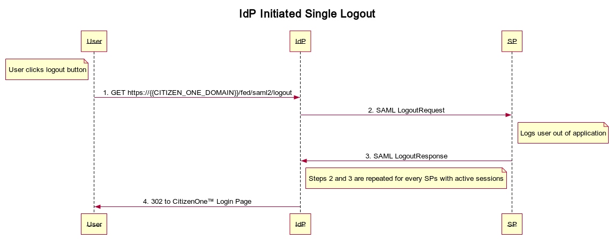
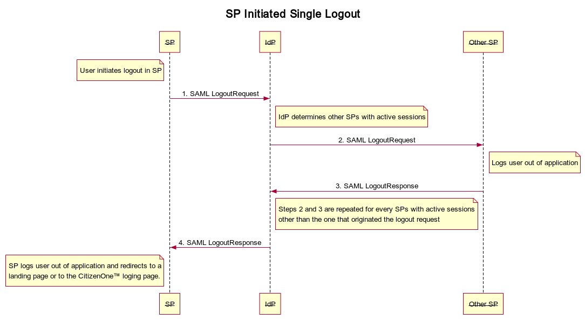

SAML¶
Single Logout (SLO)¶
SLO allows your users to sign out of all the applications they signed in to as well as CitizenOne™ at the same time. This is great from a security perspective, but it can be confusing from the user’s perspective and is fragile since it is entirely browser based and it is possible for the user to get stuck on an application that doesn’t handle the SLO request properly.
SLO can be initiated by the IdP or one of the SPs. The resulting requests to CitizenOne™ and the overall flow change slightly depending which one you use.
IdP Initiated¶
You can trigger an IdP initiated logout by redirecting the user’s browser to: https://{{CITIZEN_ONE_DOMAIN}}/fed/saml2/logout. You should not log the user out of your SP application prior to making this request. This is the flow that gets triggered if the user clicks the logout button in CitizenOne™.
An IdP Initiated request will tell all SPs with active sessions to logout by redirecting the user’s browser to their SingleLogoutService endpoint with a SAML LogoutRequest and waiting for a SAML LogoutResponse at its SingleLogoutService endpoint. Each SP will be logged out before login the user out of CitizenOne™ and redirecting to the login page.
{kind=link}
SP Initiated¶
Your SP can initiate the SLO flow by making a SAML LogoutRequest to CitizenOne™’s SingleLogoutService endpoint: https://{{CITIZEN_ONE_DOMAIN}}/fed/saml2/idpSingleLogout. You should not log the user out of your SP application prior to making this request.
An SP Initiated request will tell all SPs with active sessions other than the one that initiated the request to logout by redirecting the user’s browser to their SingleLogoutService endpoint with a SAML LogoutRequest and waiting for a SAML LogoutResponse at its SingleLogoutService endpoint. Once every other SP application is logged out, the IdP will send a SAML LogoutResponse to the SP that initiated the logout flow. At this point it is up to the SP application to decide if it should redirect to a landing page of their own or to the CitizenOne™ login page.
{kind=link}
Reference¶
- SAML Single Logout
See section 3.7 of the SAML Core 2.0 Oasis Standard.
- LogoutRequest
See section 3.7.1 of the SAML Core 2.0 Oasis Standard
- LogoutResponse
See section 3.7.2 of the SAML Core 2.0 Oasis Standard
Identity Assurance Profiles¶
CitizenOne™’s SAML Identity Provider supports an extension for parties using SAML to exchange information regarding identity assurance. First, it provides guidelines for the definition of SAML Authentication Context [SAMLAC] classes corresponding to different assurance criteria – thereby allowing the corresponding URIs for those assurance-based classes to be inserted within authentication requests and responses. Secondly, it defines a SAML attribute profile that may be used to represent the certification status of an issuer of authentication statements (i.e., an Identity Provider) regarding its conformance with the requirements of an identity assurance framework.
The full extension specification can be found here: https://docs.oasis-open.org/security/saml/Post2.0/sstc-saml-assurance-profile.html
CitizenOne™’s SAML Identity Provider places the <saml:Attribute> element in the IdP’s <md:EntityDescriptor> to indicate that the practices of the IdP have been certified as conformant with the requirements of the stated LOA. A party relying on this metadata could use this value as input to policy as to whether to accept SAML authentication assertions from this IdP. For example:
<Extensions>
<attr:EntityAttributes>
<saml:Attribute Name="urn:oasis:names:tc:SAML:attribute:assurance-certification" NameFormat="urn:oasis:names:tc:SAML:2.0:attrname-format:uri">
<saml:AttributeValue>https://schemas.vivvocloud.com/assurance/loa3</saml:AttributeValue>
</saml:Attribute>
</attr:EntityAttributes>
</Extensions>
When an assertion is provided for a user who has achieved a certain LOA, the urn:oasis:names:tc:SAML:attribute:assurance-certification attribute will be included, e.g.:
<saml:Attribute Name="urn:oasis:names:tc:SAML:attribute:assurance-certification" NameFormat="urn:oasis:names:tc:SAML:2.0:attrname-format:uri">
<saml:AttributeValue xmlns:xsi="http://www.w3.org/2001/XMLSchema-instance" xsi:type="xs:string">
https://schemas.vivvocloud.com/assurance/loa3
</saml:AttributeValue>
</saml:Attribute>
The following schemas are provided which link to the trust framework that CitizenOne™ adhere’s to, the Pan-Canadian Trust Framework’s Verified Person Profile:
SAML Attribute Mapping¶
SAML contains attributes in the SamlAttributeStatement structure that we map to CitizenOne™’s Identity. Here is a sample AttributeStatement:
<saml:AttributeStatement xmlns:xs="http://www.w3.org/2001/XMLSchema" xmlns:xsi="http://www.w3.org/2001/XMLSchema-instance">
<saml:Attribute Name="http://schemas.auth0.com/email_verified" NameFormat="urn:oasis:names:tc:SAML:2.0:attrname-format:uri">
<saml:AttributeValue xsi:type="xs:boolean">false</saml:AttributeValue>
</saml:Attribute>
<saml:Attribute Name="http://schemas.auth0.com/nickname" NameFormat="urn:oasis:names:tc:SAML:2.0:attrname-format:uri">
<saml:AttributeValue xsi:type="xs:string">testy</saml:AttributeValue>
</saml:Attribute>
<saml:Attribute Name="http://schemas.auth0.com/picture" NameFormat="urn:oasis:names:tc:SAML:2.0:attrname-format:uri">
<saml:AttributeValue xsi:type="xs:string"> https://s.gravatar.com/avatar/16f3771e3e92248287dce288b6d871ba?s=480&r=pg&d=https%3A%2F%2Fcdn.auth0.com%2Favatars%2Fte.png</saml:AttributeValue>
</saml:Attribute>
<saml:Attribute Name="http://schemas.auth0.com/updated_at" NameFormat="urn:oasis:names:tc:SAML:2.0:attrname-format:uri">
<saml:AttributeValue xsi:type="xs:anyType">Tue Feb 11 2020 20:05:41 GMT+0000 (Coordinated Universal Time)</saml:AttributeValue>
</saml:Attribute>
</saml:AttributeStatement>
SAML allows attributes to have a FriendlyName and Name associated with each Attribute. Different IdPs use different attribute schemas which makes adding new SAML IdPs troublesome because code must change in order to accommodate any attributes not accounted for.
In order to solve this problem we have decided to do the following:
Add an saml_to_attribute_map table which maintains a mapping of known SAML attributes to where they fit in the CitizenOne™ profile. The schema is defined as:
saml_assertion_name_id int(11) not null AUTO_INCREMENT,
attribute varchar(255) not null,
attribute_name varchar(255) not null,
identity_dto_attribute varchar(255) not null,
PRIMARY KEY (saml_assertion_name_id)
For every attribute in the attribute statement, see if we have defined a mapping to the CitizenOne™ profile.
Adding new attributes¶
Adding new attributes are as simple as:
Adding a row to saml_assertion_name_id
Restarting the vivvo-sp micro-service.